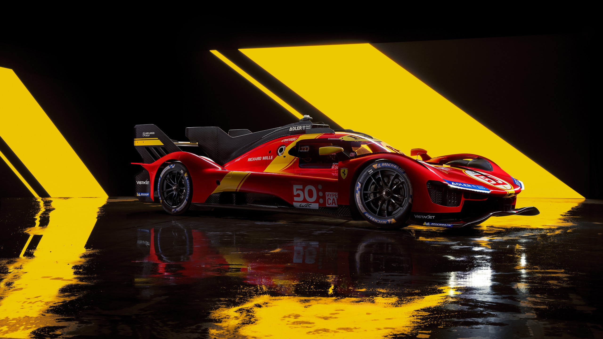

Kompozit fejlesztések

A BME Formula Racing Team-ben töltött éveim alatt kompozit szerkezetek tervezésével és gyártásával foglalkoztam. A munkám során lehetőségem nyílt megismerni a modern szénszálas technológiákat és részt venni innovatív, könnyűszerkezetes megoldások kialakításában. Az általam vezetett projektekben hangsúlyt fektettünk a precizitásra, az anyagtakarékosságra és a versenya utó teljesítményének növelésére. A gépészeti tervezés során elengedhetetlen a korszerű CAD szoftverek használata. Több projektben is vezető szerepet vállaltam a vázszerkezetek és alkatrészek digitális modellezésében. A 3D tervezés lehetőséget adott a gyors prototípus-készítésre, valamint a gyártás előtti pontos ellenőrzésekre. A gépészeti tervezés során elengedhetetlen a korszerű CAD szoftverek használata. Több projektben is vezető szerepet vállaltam a vázszerkezetek és alkatrészek digitális modellezésében. A 3D tervezés lehetőséget adott a gyors prototípus-készítésre, valamint a gyártás előtti pontos ellenőrzésekre. A gépészeti tervezés során elengedhetetlen a korszerű CAD szoftverek használata. Több projektben is vezető szerepet vállaltam a vázszerkezetek és alkatrészek digitális modellezésében. A 3D tervezés lehetőséget adott a gyors prototípus-készítésre, valamint a gyártás előtti pontos ellenőrzésekre. A gépészeti tervezés során elengedhetetlen a korszerű CAD szoftverek használata. Több projektben is vezető szerepet vállaltam a vázszerkezetek és alkatrészek digitális modellezésében. A 3D tervezés lehetőséget adott a gyors prototípus-készítésre, valamint a gyártás előtti pontos ellenőrzésekre.

CAD és 3D tervezés

A gépészeti tervezés során elengedhetetlen a korszerű CAD szoftverek használata. Több projektben is vezető szerepet vállaltam a vázszerkezetek és alkatrészek digitális modellezésében. A 3D tervezés lehetőséget adott a gyors prototípus-készítésre, valamint a gyártás előtti pontos ellenőrzésekre. A gépészeti tervezés során elengedhetetlen a korszerű CAD szoftverek használata. Több projektben is vezető szerepet vállaltam a vázszerkezetek és alkatrészek digitális modellezésében. A 3D tervezés lehetőséget adott a gyors prototípus-készítésre, valamint a gyártás előtti pontos ellenőrzésekre. A gépészeti tervezés során elengedhetetlen a korszerű CAD szoftverek használata. Több projektben is vezető szerepet vállaltam a vázszerkezetek és alkatrészek digitális modellezésében. A 3D tervezés lehetőséget adott a gyors prototípus-készítésre, valamint a gyártás előtti pontos ellenőrzésekre.

Motorsport tapasztalat

A Formula Student versenyeken szerzett tapasztalataim nemcsak a műszaki tudásomat erősítették, hanem betekintést nyújtottak a professzionális motorsport világába. A csapatmunka, a határidők betartása és a f olyamatos fejlődés iránti elkötelezettség meghatározó élményt jelentettek számomra. A gépészeti tervezés során elengedhetetlen a korszerű CAD szoftverek használata. Több projektben is vezető szerepet vállaltam a vázszerkezetek és alkatrészek digitális modellezésében. A 3D tervezés lehetőséget adott a gyors prototípus-készítésre, valamint a gyártás előtti pontos ellenőrzésekre.